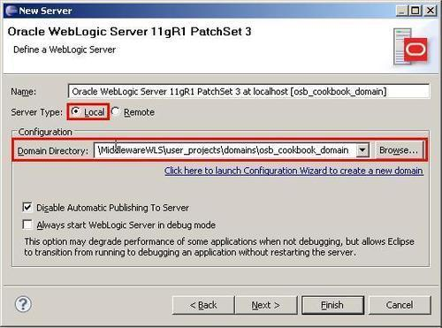
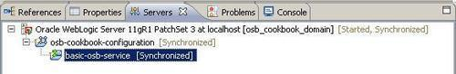
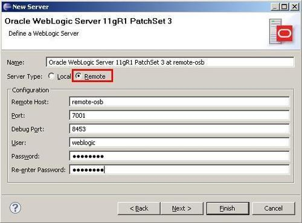
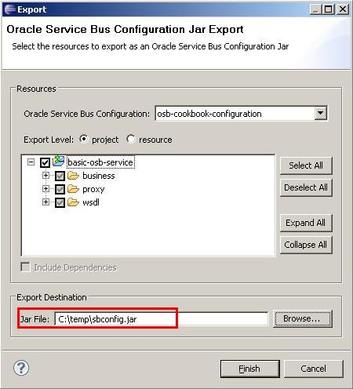
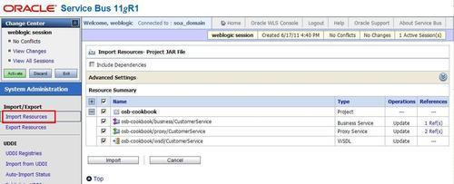

Before we can test an OSB service, we need to deploy it to a running OSB server. Such a server can either be locally on the same machine or it can be on another, remotely accessible server. In this recipe, we will only use the functionality provided by Eclipse OEPE to deploy our service, because it's the simplest of the possible options for deployment. Of course there exists other, more automatic and repeatable ways for deployment through WLST or Apache Ant, but in this book, the deployment through Eclipse OEPE as shown here is good enough.
Make sure that the OSB server is running locally on your machine. The easiest way to check that it's up and running is navigating to the OSB console in a browser window. Enter the URL http://[OSBServer]:[Port]/sbconsole (replacing [OSBServer] with the name of the server and [Port] with the port of your installation) and you should get the login window of the OSB console. Check if the OSB server is up and running, especially when running the OSB on a managed server.
Make sure that the Oracle Service Bus perspective is the active one in Eclipse OEPE. The perspective is visible in the top-right corner of the Eclipse window.
Make sure that the project with the result from the previous recipe is available in Eclipse OEPE. If not then it can be imported from here: \chapter-1\getting-ready\pass-through-proxy-service-created.
First we need to create the server reference inside Eclipse OEPE and after that we can deploy the OSB configuration with its projects to the server.
In Eclipse OEPE, perform the following steps to create a server:

Now the local OSB server is configured in Eclipse OEPE. The next step is to deploy the OSB configuration to this sever. Still in Eclipse OEPE, perform the following steps:

The OSB configuration is now successfully deployed and ready to be used.
Behind the scenes, Eclipse OEPE is creating a JAR file (a Java Archive) with all the artifacts which belong to the OSB configuration and deploys that archive to the OSB server.
The mechanism to deploy directly from Eclipse should only be used during development. Later when deploying to integration, quality assurance, or a production system, of course, a more automatic and reproducible way is necessary. This can be achieved through Apache Ant and WLST.
In this section, we will show the alternative ways for deploying a project to an OSB server.
Eclipse OEPE can also be used to deploy to a remote server. Just click on the Remote option when defining the WebLogic Server in the New Server wizard:

An OSB configuration can also be deployed by using the OSB console. In Eclipse OEPE, perform the following steps:

In the OSB console, perform the following steps to import the Configuration Jar that we just created:
c:\temp\sbconfig.jar).
If we need to adapt some properties like endpoint URI to match the target environment, we can use a customization file and apply that when doing the deployment.